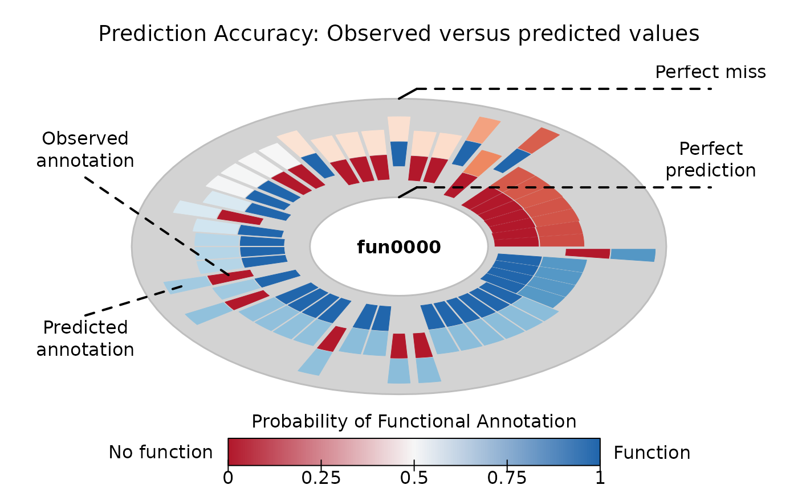

Calculate prediction score (quality of prediction)
prediction_score(x, expected, alpha0 = NULL, alpha1 = NULL, W = NULL, ...) # S3 method for default prediction_score(x, expected, alpha0 = NULL, alpha1 = NULL, W = NULL, ...) # S3 method for aphylo_estimates prediction_score( x, expected = NULL, alpha0 = NULL, alpha1 = NULL, W = NULL, loo = TRUE, ... ) # S3 method for aphylo_prediction_score print(x, ...)
| x | An object of class aphylo_estimates or a numeric matrix. |
|---|---|
| expected | Integer vector of length \(n\). Expected values (either 0 or 1). |
| alpha0, alpha1 | Probability of observing a zero an a one, respectively. |
| W | A square matrix. Must have as many rows as genes in |
| ... | Further arguments passed to predict.aphylo_estimates |
| loo | Logical scalar. When |
In the case of prediction_score, ... are passed to
predict.aphylo_estimates.
In the case of the method for aphylo estimates, the function takes as a reference using alpha equal to the proportion of observed tip annotations that are equal to 1, this is:
mean(x$dat$tip.annotation[x$dat$tip.annotation != 9L], na.rm = TRUE)
# Example with prediction_score --------------------------------------------- set.seed(11552) ap <- raphylo( 50, P = 1, Pi = 0, mu_d = c(.8,.2), mu_s = c(0.1,0.1), psi = c(0,0) ) ans <- aphylo_mcmc( ap ~ mu_d + mu_s + Pi, control = list(nsteps=2e3, thin=20, burnin = 500), priors = bprior(c(9, 1, 1, 1, 5), c(1, 9, 9, 9, 5)) ) #> Warning: While using multiple chains, a single initial point has been passed via `initial`: c(0.9, 0.9, 0.1, 0.1, 0.1). The values will be recycled. Ideally you would want to start each chain from different locations. #> Warning: This function should not be used in a context other than the argument `conv_checker` in `MCMC`. #> No convergence yet (steps count: 2500). Gelman-Rubin's R: 1.4590. Trying with the next bulk. #> No convergence reached after 2500 steps (100 final count of samples). (pr <- prediction_score(ans, loo = TRUE)) #> Prediction score (H0: Observed = Random) #> #> N obs. : 99 #> alpha(0, 1) : 0.43, 0.55 #> Observed : 0.65 * #> Random : 0.50 #> P(<t) : 0.0537 #> -------------------------------------------------------------------------------- #> Values scaled to range between 0 and 1, 1 being best. #> #> Significance levels: *** p < .01, ** p < .05, * p < .10 #> AUC 0.78. #> MAE 0.35. plot(pr) 